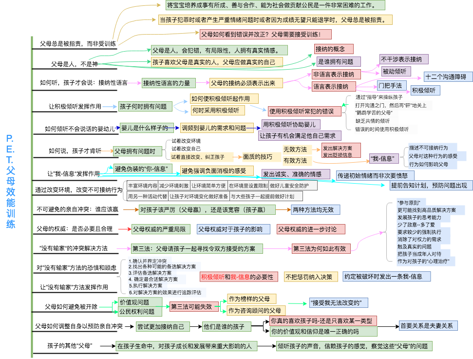

《P.E.T.父母效能训练》总结
题记
今年升级成为了一个父亲，第一眼看到襁褓里的宝宝，心里有股难言的激动和些许能否成为个好父亲的担心。所以加强学习，努力成为一个好父亲啦。在网上找到了这本关于亲子沟通的书,豆瓣496人评价,评分9.2。读完之后，明白了以前和父母之间沟通不顺利的原因，以及应该如何和子女之间沟通。
PET知识点

部分摘抄

”问题“是指谁的内在需求没有得到满足，那么谁就拥有问题，问题就归属他，需要他来解决—不是指谁做错了什么，谁出现问题。
| 孩子拥有问题时 | 父母拥有问题时 |
|---|---|
| 由孩子发起对话 | 由父母发起对话 |
| 父母是倾听者 | 父母是发送者 |
| 父母是辅导者 | 父母是影响者 |
| 父母想帮助孩子 | 父母想帮助自己 |
| 父母是听众 | 父母要明确说出自己的看法 |
| 父母协助孩子寻找到属于她自己的解决方案 | 父母必须寻找到自己的解决方案 |
| 父母接受孩子的解决方案 | 父母必须对她自己的解决方案感到满意 |
| 父母主要关注孩子的需求 | 父母主要关注自己的需求 |
| 父母较为被动 | 父母较为主动 |
十二个沟通障碍
1 | 1. 命令、指挥、控制 |
”解决方案信息“
1 | 1. 命令、指示、指挥 |
”贬损信息“
1 | 1. 评判、批评、责备 |
孩子对父母权威的应对机制清单
1 | 1. 抵抗、违抗、反抗、作对 |
”接受我无法改变的“
1 | 主啊！请赐予我勇气，改变我能改变的； |
《先知》
1 | 你的孩子并非真正是你的孩子。 |
我的人际关系信条
我重视且想要维持你我之间的关系。然而，我们每一个人，都是独立的个体，有独特的需求，也有追求满足这些需求的权利。当你试图满足自己的需求，或者在满足需求要到阻碍时，我会试着由衷地接纳你的行为。
当你告诉我你的问题时，我会用接纳和理解的态度倾听，协助你找到属于自己的解决办法，而不是用我的解决办法。如果我的行为妨碍了你满足你的需求，你对此感到不舒服时，我希望你坦诚地告诉我你的感受。在那时，我会倾听，并尽我所能修正我的行为。
然而，如果你的行为妨碍到我满足我的需求，并让我对你有所抗拒时，我会坦率地告诉你我的问题，尽我所能地开放和真诚地告诉你我的真实感受，相信你会因尊重我的需求而倾听，并试着改变你的行为。
若是我们两个都无法改变自己的行为，去满足对方的需求，使得我们的关系中产生需求冲突时，让我们对自己承诺，不运用我的或是你的权利，以一方胜利建立在另一方失败的代价，来解决任何一个这样的冲突。我尊重你的需求，但我也尊重我自己的需求。因此，让我们共同追寻能为双方都接受的，解决我们之间不可避免的冲突的方法。这样，你的需求得到满足，而我的需求也可以得到满足—-没有人会输，我们都是赢家。
如此，你可以通过满足你自己的需求继续成长，我也一样。借此，我们之间的关系是健康的，因为彼此的需求都得到了满足。我们当中的任何一方都可以变成我们希望成为的样子。伴随着相互之间的尊重和爱，我们可以和谐友好得继续保持彼此的关系。
本文链接：《P.E.T.父母效能训练》总结
作者：Vskyman
出处：https://vskyman.github.io/
本文基于 知识共享署名-相同方式共享 4.0
国际许可协议发布，欢迎转载，演绎或用于商业目的，但是必须保留本文的署名及链接。